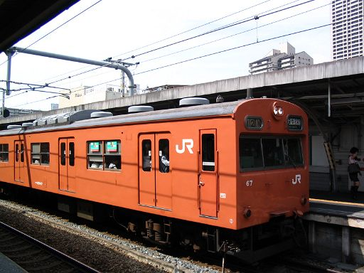
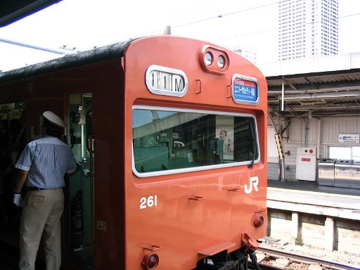
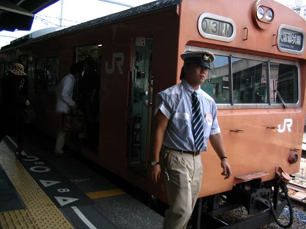
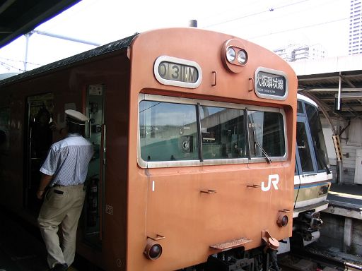
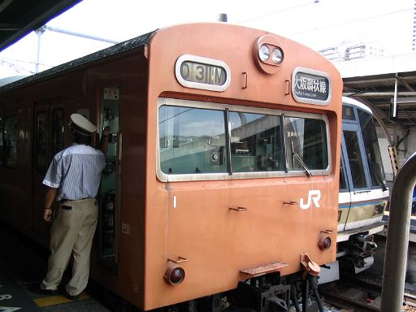
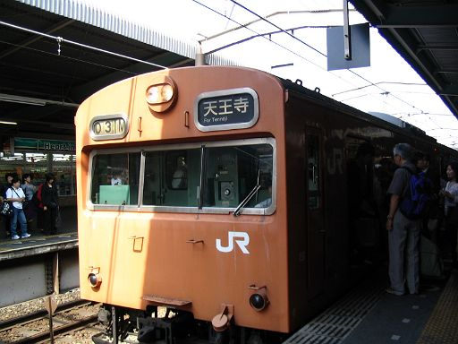

鶴橋外回りホームのロッテリア前に長いこといたんですが、もう帰宅します。
内回りに乗り換えての帰宅途中、桜ノ宮で下車しました。
あと一駅で自宅の天満なんだけどね、なんか写真ちゃんと撮れなかったのくやしいし。
鶴橋では外回りホームで逆光になったから、桜ノ宮の内回りホームならどうだ。
ホームの端っこで「人待ってます」の振りして、待とうかな。
よっしゃー向かいのホームになんかきたぞ。
撮影練習～、パシャ
ついでにビデオも撮影練習～、(Clickで動画再生）

ありゃ～、光の加減、モひとつやな。正面が暗い。
ま、でも車両全体撮れるからヨシとするか。
動画も、まー全体入ってるし、よしゃこれで北京オタ、尼オタが喜んでくれるといいんだが。
んーと、さっき103-1が、鶴橋の外回り線ホームにはいってきたのが３０分ぐらい前だから、
環状線一周って45分とすると、あと15分前後で向かいの外回りホームに来るわけやな。フムフム。
お、こっちの内回りになんか来た。撮っとけ～パシャ

この窓はさっきのんと違うんやなあ。これってＵＳＪの方いくんやなあ。
あ、お願い、降りてきたお客さん、わたしのこと見ないで。
（後日談：無意識に一歩前に出て撮影できてるがな、ウチ。。）
外回りに103-1けーへんなあ。
お、また内回りに古いのん来た。これまたオレンジ色っちゅーより、ほとんど黄色やんけ。
ウワーボロい車両やなあ。。。へ？ひょぇえええ～！これって103-1やがな！
なんで京橋側から来んねん！あんた、アッチのホームに、大阪から来るんとちゃうんかい！
あかん～！慌てて撮影だー、パシャ

ありゃ～、運転手さんで番号隠れてもたがな！やりなおし、やりなおし、パシャ

ありゃ～、左下切れてもたがな！もういっぺんや～、パシャ

あーもう、大慌てや。ウチ何を一生懸命やってんねん！
と、とりあえず狙いの103-1撮りました！もう勘弁してくれー
しかし、どーして103-1が環状線回ってこずに逆周りしてきたんや？？
訳判らん～ 疲れた～
ひや～朝から１時間半もウチなにやってんねん。撤退や撤退！
-------- Ｙ夫のつっこみ --------
「外回り走ってた電車が内回り走るて、んなもん当然やがな。鶴橋外回りロッテリアで撮った写真をもっぺん見てみろ。」 ↓

「天王寺 って書いてあるがな。まだまだよノウ」
「環状線の電車は一日中ずっと同じ方向に走ってんちゃうん！！」
Y妻の叫びは、Y夫に無視されたまま次号に続く。。
都島